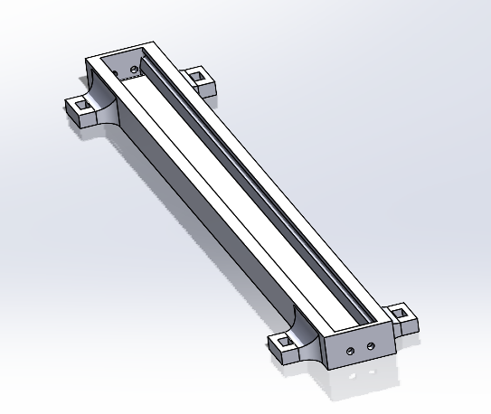
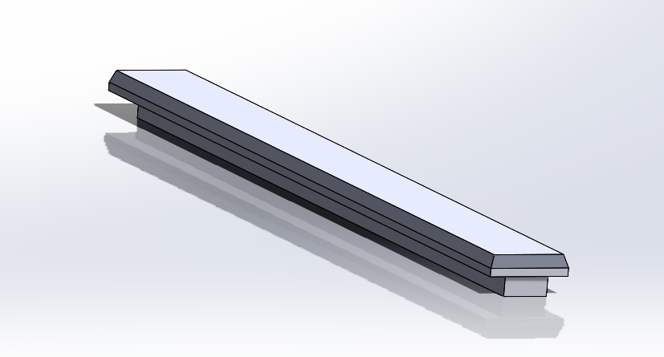
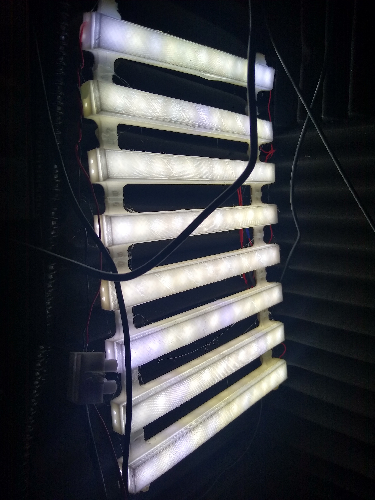

This project details the construction of a custom housing designed to hold 12V LED strips with a diffuser lid. By wiring two of these diffused strips in series, they can be powered from a 24V supply, offering a brighter and more efficient lighting solution.
The housing is 3D printed in white PLA, which serves to diffuse the intense brightness of the LED strips, reducing glare and eye strain while maintaining excellent illumination.



The diffuser lid softens the intense light emitted by the LED strips, creating a pleasant and eye-friendly glow. Wiring the strips in series allows efficient use of a 24V power source while using commonly available 12V strips.
If you have questions or want to discuss this project, feel free to contact me.